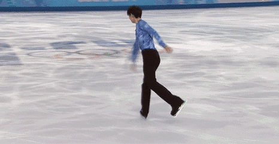

2014年2月6日，19岁的羽生结弦首次参加冬奥比赛，在索契冬奥的团体赛男单短节目中，初登场的“小将”羽生结弦4T、3A、3LZ3T全部成功，以97.98排名第- -，为日本队拿到10分。2014年2月13日，在索契冬奥会男单比赛中，羽生结弦的短节目《巴黎散步道》获得101.45分的.成绩，这也是男单短节目首次突破百分大关的纪念日!这个分数也打破了当时奥运花滑史.上短节目的最高得分纪录。 2014年2月，羽生结弦参加索契冬季奥运会，在率先进行的花滑团体赛男子单人滑中出赛，以短节目第1的成绩为日本队争取到10分 ；随后，他参加了冬奥会花滑男子单人滑比赛，短节目中动作流畅自然，以破男单短节目世界纪录的101.45分排名第1，自由滑则得到178.64分，以总分280.09夺得索契冬奥会花样滑冰男单冠军，也是66年来最年轻的男单奥运冠军得主 2014年2月15日，19岁的羽生结弦在索契冬奥男单比赛中获得金牌，成为亚洲第一-位获得冬 奥花滑男单金牌的选手。 但那一天对于羽生结弦来说，不止是第一次站上奥运最高领奖台那么简单，对他来说，更是他的另一个起点 
|